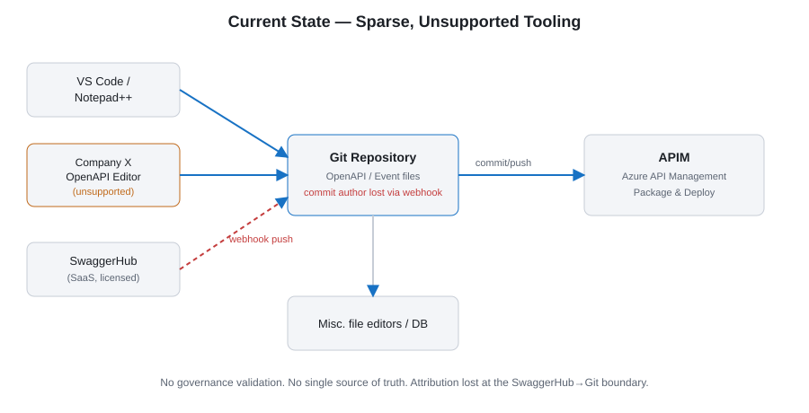
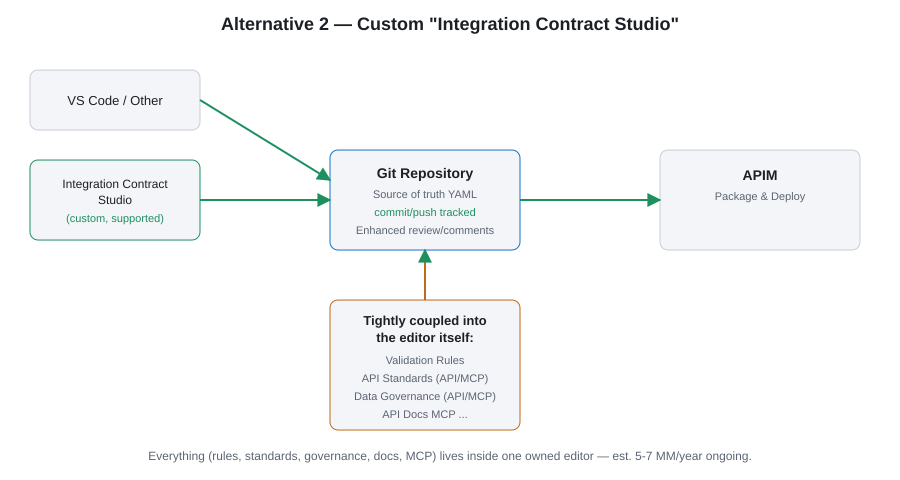

OpenAPI / Event Contract Tooling — Architectural Decision
All references to the original company name have been replaced with Company X. See the Rebuttal for why this repo contradicts the "no standard tool can do this" argument below.
Current State
Sparsely integrated and/or unsupported tools with limited support for the design and review process:
- SwaggerHub — decent editor, no Company X specific integration, good collaboration/review, limited validation, GitHub integration only via webhook (requires IT Security approval for direct repo access).
- Text/file editors (VS Code, Notepad++) plus an unsupported in-house "Company X OpenAPI Editor" with good internal data-source integration but weak governance/review features.

Target State requirements
- Usable by non-developers (e.g. business analysts).
- Integrates with company tools/data sources: governance definitions, API standards, existing API definitions.
- Must support Contract First (the selected standard for business APIs).
- Integrates well with GitHub.
- Validations available in both the build pipeline and dev tools.
- Nice to have: flexible, developer's-choice tooling.
Alternative 1 — SwaggerHub + custom validation rules
Pros
COTS. Supports Contract First. 8 years in production use. Deterministic validations in editor.
Cons
Validation rules may not cover everything. Slow vendor progress, breaking changes. No deep custom integration. License + ops cost ~1 MM/yr, +3-4 MM/yr for MCP-style features. Attribution lost via webhook.
Alternative 2 — Custom "Integration Contract Studio" (chosen)

Pros
Highly tuned to internal requirements. Tracks commits to a user in Git. Usable by non-developers. No license cost. Supports Kafka event topics more naturally than SwaggerHub.
Cons
Not COTS. Initial build cost. Ongoing maintenance ~2 MM/yr editor + 3 MM/yr developer support (partly already hidden cost today) + 3-4 MM/yr for MCP servers.
Alternative 3 — Market research
Survey Postman, Redocly, Apidog, Scalar, etc. Recent desktop research found low probability of a commercial tool significantly better than SwaggerHub; time-consuming with an uncertain payoff.
Decision
The decision is to use Alternative 2. Key strengthened argument added after initial rejection:
The key requirement is not a better OpenAPI editor, but an integrated contract-design workflow for both APIs and Kafka event topics — one that makes data governance and integration standards practical to follow. Designers need to find and reuse approved data definitions, link them to API and event fields, and submit proposed new definitions for governance approval. This moves governance from "spreadsheet governance" to "operational governance." No tool on the market can deliver this workflow.
Review comments
Colleague B: This decision deviates from the architecture principle "Standard solution to standard problem." The company-specific parts (validation rules, data governance definitions) can be delivered as rulesets and APIs/MCPs that work with standard tools. Suggested adding a standard alternative: Git + PR review + Spectral + standard editor + governance API/MCP, with an explicit TCO comparison.
Colleague A: The principle needs re-evaluating given what AI enables now. The custom tool doesn't prevent anyone from using Git+PR+Spectral if they prefer it.